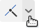

Fuselage Tutorial 1
|
2
|
3
|
4
|
Next
23.
Start the sketch for the nosecone tether holder
Start a new sketch
Select the plane you just created
Select the "Use (Project/Convert)" tool Click the inside circle on the body tube
24.
Sketch the outside of the tether holder
Deselect the "Use (Project/Convert)" tool by pressing Esc
Align your view to the sketch plane by clicking "Top" on the view cube
Select the "3 point arc" tool
Keyboard shortcut »
The 3-point (standard) arc, a sketch tool, uses the letter a.
Set the first point on the circle, above the centerline
Set the second point on the circle, below the centerline
Set the third point so the arc is in inside the tube
25.
Constrain the arc's center to the circle
Select the "Coincident" tool
Keyboard shortcut »
Many of the sketch constraints also use keyboard shortcuts.
Rather than teach you each one, you can learn them by viewing the displayed letter in dropdown menus or hovering over the tool's name in the interface.
Note that "circle" is c, so "coincident" must be something else.
Select the point that is the center of the arc you just created
Select the bold circle, and you'll see the point jump onto the circle
What is a constraint? »
Constraints fully define the elements of your sketch.
A sketch that is not fully constrained can be dragged around into different positions
A fully defined sketch is in exactly the one possible position
and the lines turn from blue to black If you didn't constrain your sketches, your final result could fall within a range of possibilities. Don't leave your CAD models to chance.
26.
Constrain the arc's center to the centerline
Select the "Horizontal" tool 
Select the arc's center
Select the origin point, and you'll see the point jump to the line and turn black
(black = fully constrained)
27.
Draw the center circle
Select the circle tool
Draw a circle anywhere inside your arc and the tube (make it small)
(we'll constrain it in a moment to be exactly where we want) Select the "Horizontal" tool
Select the circle's center
Select the origin and you should see the circle snap to the center
28.
Dimension the left gap
Select the dimension tool
Click the circle's edge
Click the tube's circle that you have been using
Set the dimension to 0.01 in
29.
Dimension the circle's diameter
With the dimension tool still selected:
Select the circle
Set the dimension to 0.13 in
30.
Dimension the gap on the other side
With the dimension tool still selected:
Click the circle's edge
Click your 3-point arc
Set the dimension to 0.025 in
Did you notice how everything turned black? »
Black lines mean, “fully defined,” which means that you have told Onshape exactly where the line is.
If a line is blue, it means that there are still things to be constrained or dimensioned.
31.
Trim the outer circle, finish sketch
Select the "Trim" tool
Keyboard shortcut »
Since t is taken by "tangent", we use the last letter m for "trim".
Don't see the trim icon? »
On narrow screens, items are hidden in menus. Trim collapses into the menu with sketch fillet
Select the part of the circle outside of the arc
32.
Extrude the tether holder
Select the extrude tool
Confirm that your newly created sketch is selected.
Set the depth to 0.75 in
Click the "Opposite direction"
Click the green check
33.
Fillet the tether holder
Select the "fillet" tool
Click the arc on the edge of the tube and the holder
Set the radius to 0.15 in
Select the same arc on the bottom of the holder
Click the green check
34.
Exit section view
Select the view cube menu
Select "Turn section view off"
35.
Part Volume = 0.301 in3
Select "mass properties"
Select "Part1"
Fuselage Tutorial 1
|
2
|
3
|
4
|
Next
© 2026 Stage One Education, LLC

 to make your plane fall inside your tube
to make your plane fall inside your tube